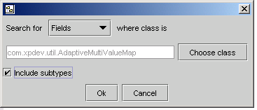
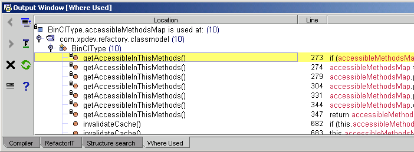
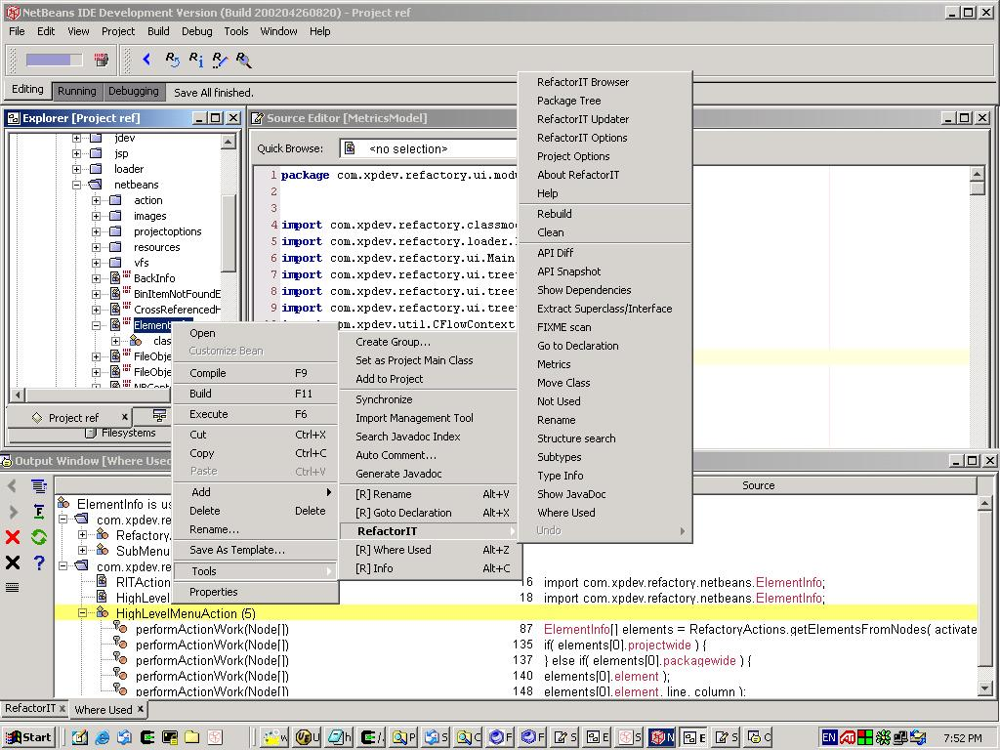
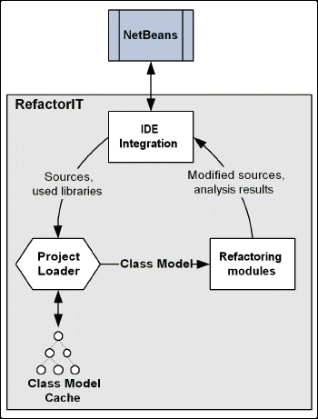

Let's face it: all code will have to evolve and be modified. Software of any sophistication just isn't destined to harden. New styles and practices of development are advocated by the Agile Software Manifesto and the iterative deployment processes of extreme programming to keep software flexible and more useful over time. The latest articles from Robert C. Martin highlight the importance of continuous care, showing that the evolution of code -- through a process of refactoring -- is more important than initial design.
All of these practitioners advocate Refactoring as a primary discipline, to be applied to code bases within each iteration. Refactoring isn't a fad: it's a fundamental way to keep your code flexible and clean, as you keep learning about what the actual design needs are.
Using the methodology of Refactoring makes change manageable - using the RefactorIT tool makes change easy.
What RefactorIT Does
RefactorIT is a NetBeans module that performs common refactoring operations safely and automatically. RefactorIT adds new menu items, such as Rename, Where Used or Extract Method, to IDE-s context menus.

Figure 1: Snapshot of RefactorIT in action with NetBeans.
With RefactorIT you can safely select any item and rename it, search for its usages or its dependencies. Extract a piece of code into a separate method. Move a class to a different package, encapsulate field to be accessed by getter and setter methods, turn constructor usages into factory method, explore classes hierarchy, extract a superclass or superinterface out of existing class, save and compare snapshots of API, find where exception is caught, track your TODO/FIXME comments, find not used fields and methods, see source code metrics, quickly navigate the source code or search for source code constructs like 'search for methods returning java.io.File'.
RefactorIT's Underlying Technology
Basic functionality is not the only criteria for a refactoring tool to be useful and efficient. The tool must also meet certain requirements, among them:
Architecture of RefactorIT
The objectives outlined above had a direct bearing on the architectural design of RefactorIT — in fact the goal was to build a tool which can accurately and quickly perform refactorings and analysis functions invoked from various places within the IDE.
The resulting architecture can be roughly divided into distinct parts as
follows:
The project loader handles the loading (or reloading) of the project upon
the user's invocation of a refactoring or analysis function. When first run,
the project loader builds a class model from the set of source and class
files. In addition, it constructs an abstract syntax tree (AST) from the
parsed source. The AST stores information about the source files –
below the method level – and links type definitions with their
references throughout the code. This is the heart of
RefactorIT. RefactorIT passes the AST to the refactoring or analyzing
component specified by the user. From there, the tree is analyzed and
manipulated, and finally RefactorIT displays the query results or writes the
refactored sources to their corresponding files.
To optimize performance, RefactorIT caches the class model and syntax
tree of the project. Consequently, for large projects, the first run only of
a refactoring or analysis function goes relatively slowly as the class model
and syntax trees is built. Subsequent runs take much less time because the
project class model is already constructed and only has to be updated in
places where the user has changed code. RefactorIT has a pluggable module
architecture – in fact all refactorings are implemented in different
modules. This enables developers to add experimental modules to RefactorIT
without worrying about compatibility — only the modules which are fully
tested are bundled with the installer.
RefactorIT in Practice

Figure 2: Architectural depiction of RefactorIT working with NetBeans to automate refactoring code.
Let's say, we have a calculation caching mechanism. In the start we build up calculation results that we need to store and later query this cache to save time. We have created our own data structure MultiValueMap for storing these caches.
This structure needs to be fast, while we are building it and memory efficient, when we store it. Currently it is only fast and not memory efficient.
We have found out we could 'compact' the map, but in its compact form the storing operations would be slower.
So what we need to do is to call compact on right items and at the right time.
RefactorIT Walkthrough
Conclusion
RefactorIT provides a wide range of refactoring and analysis functions which enable developers of Java technology to quickly and successfully restructure program source - improving its design, evolution, and reuse potential.
NetBeans was chosen to be the primary integration platform for RefactorIT because it is the home of worldwide innovation in Java Tools. RefactorIT, through its tight integration with NetBeans, makes the refactoring process easier, faster, and more efficient.
Further Information
For further information about RefactorIT, refer to the following web pages